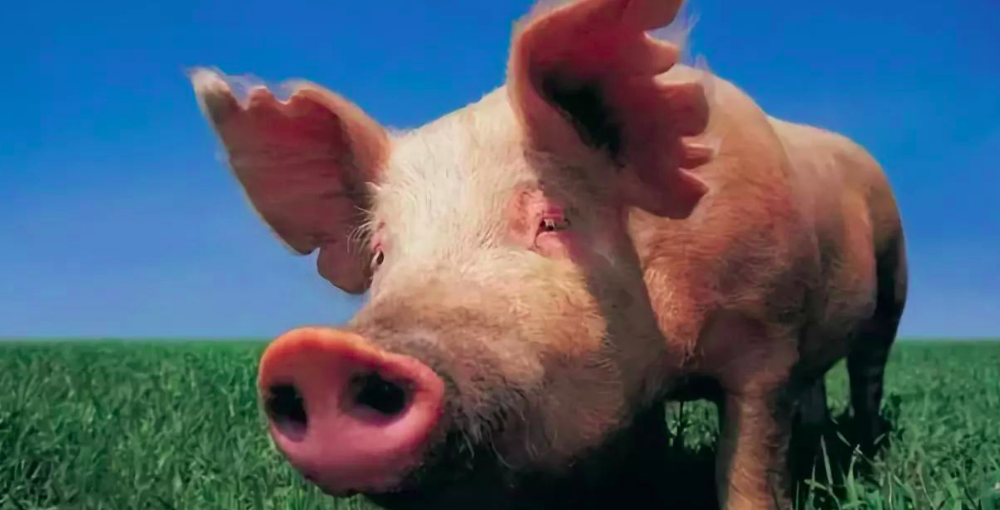

科学养猪的真正奥义，培养拯救人类的医学英雄
不可否认，猪一直以来是好吃懒做、没用的代名词。然而你知道吗？
猪俨然是一座活生生的科学宝库。在科学家眼里，它的全身上下都可能挖出新的科研宝藏。
不光有食品猪，还有模式猪、移植猪、材料猪等等。甚至还有专门围绕猪来开展科研的“天蓬工程”。
在现代科学中，它是最理想和重要的实验动物之一，在医学等领域发挥重要作用。
要是再小瞧“二师兄”的用处，可能分分钟被打脸。因为未来我们人类的器官都可能要从它身上来借....

长久以来，猪就因其长相而被贴上各种负面的标签。诸如蠢猪、笨猪、懒猪、死猪、肥猪等等。
似乎佩奇再优秀，也无法抹去这些根深蒂固的猪设。 可实际上，猪并没有你想象的那么不堪。
相反，它身上有很多值得嘉许的地方。比如猪有很强的学习和记忆能力，能够做到“过鼻不忘”。
别看猪那鼻子长得硕大笨拙，但却能嗅到地下1-2米深的东西。
它们完全有能力胜任狗的工作，比如帮助人们检查毒品、寻找物证破案等。
至于为什么没有专门的侦查猪，可能是因为它们不够苗条吧。不光如此，它们还拥有很高的认知领悟能力。
只要稍加训练，它们能按人类的指令执行打鼓、游泳、原地旋转、直立推小车等任务。
只是作为最早被人类驯养的家畜之一，它们并没有太多机会发挥聪明才智。
整日被关在狭窄的猪圈里生活，长肥了就被宰杀，为人类所用。
除了猪肉能食用外，猪皮能制革，猪鬃能制毛刷，猪血能制颜料，猪油能制造肥皂，
猪蹄可作雕刻原料，甚至猪粪可作肥料...可以说，浑身上下没一处是无用的。
